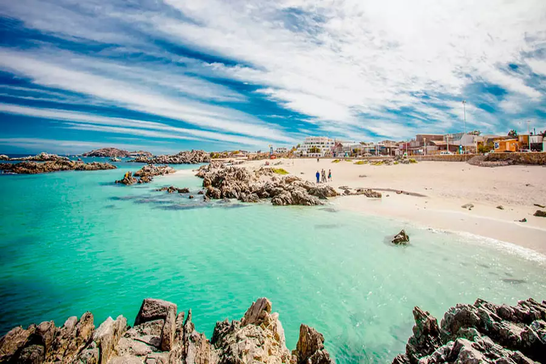
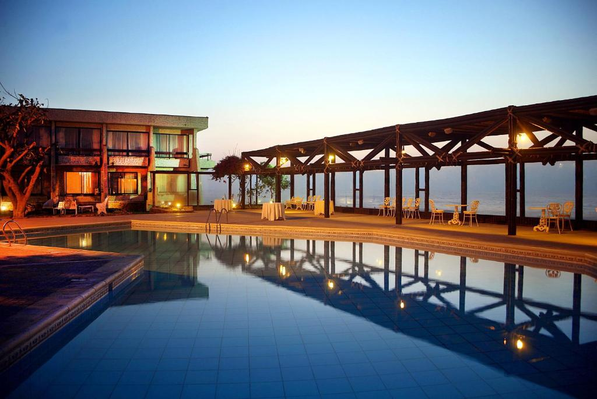
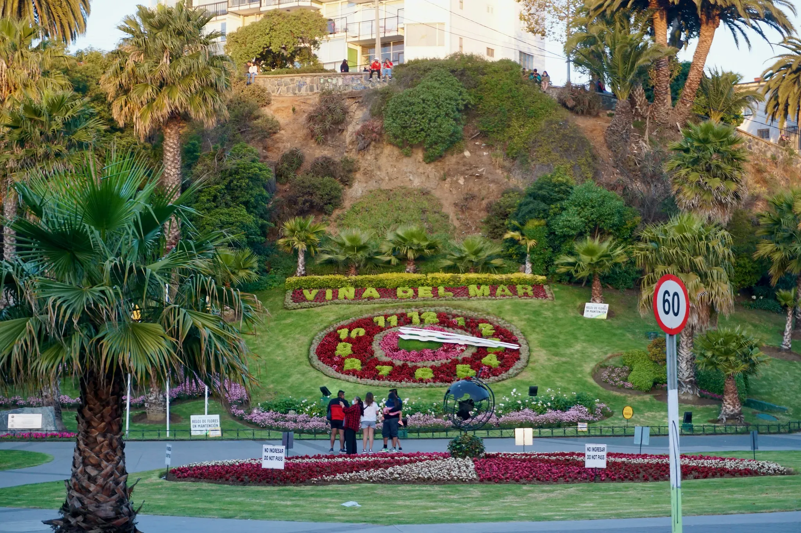
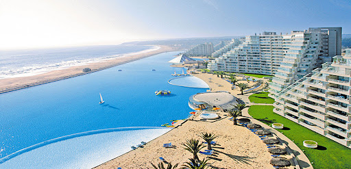
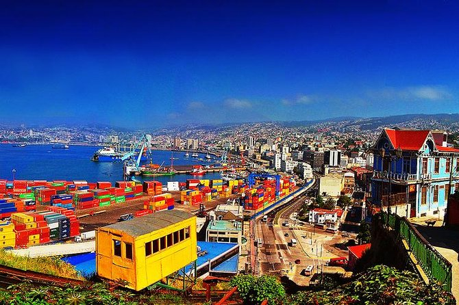
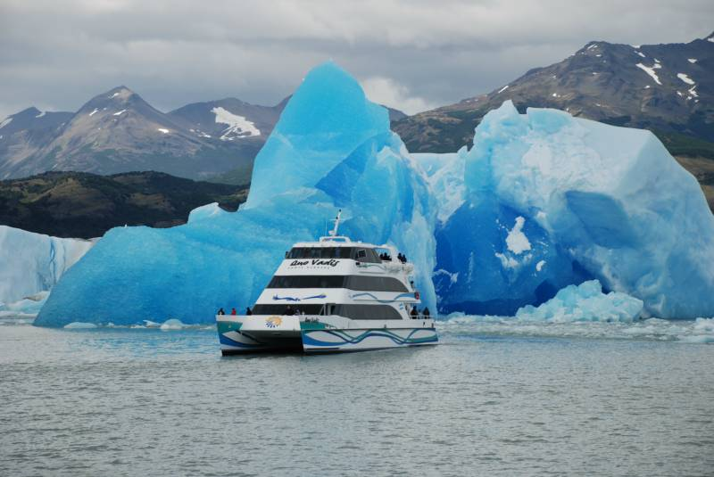
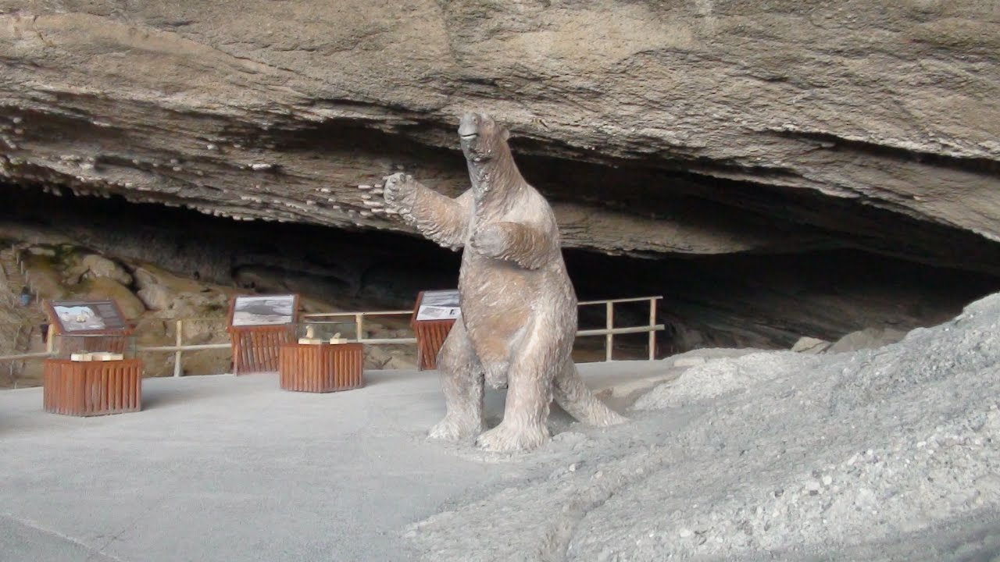
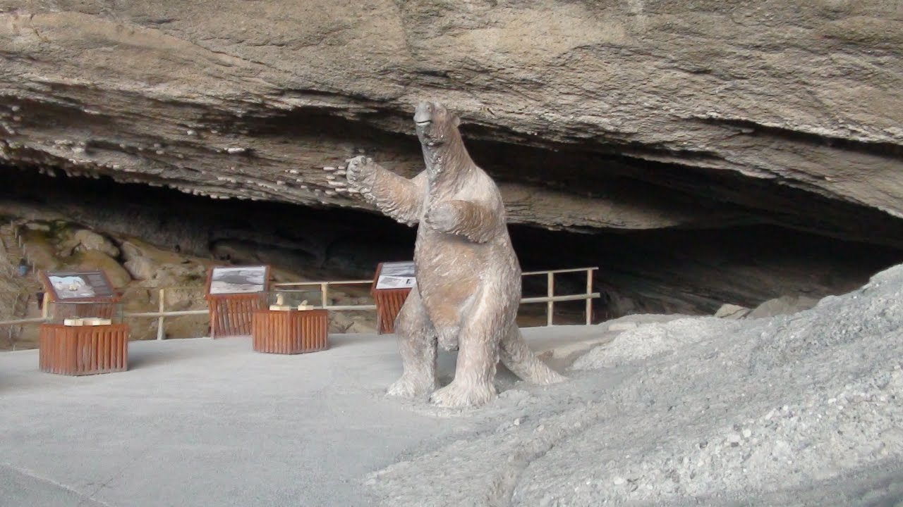

Para este Invierno 2024
Tenemos las mejores
promociones para ti!!
Viaja al Norte de Chile (Destino Arica)



Promocion 5 dias y 4 noches
En la ciudad de Arica, ven a disfrutar de un clima soleado, disfrutar de las playas y los carnavales
que se pueden disfrutar la gran parte del año, mas el increible alojamiento en el hotel mas centrico de la ciudad
el cual ofrece exelente vista al mar y picinas abiertas 24hrs.
Viaja al Centro de Chile Destino (Viña del mar)



Promocion 4 Dias y 3 Noches
No te puedes perder la oportunidad de visitar la ciudad jardin, Viña del mar,
la cual te ofrece por esta temporada de invierno, estadia en unos de los hoteles
mas prestigiosos de Chile y donde se han quedado artistas importantes del mundo,
ven a disfrutar de las caminatas por la playa del deporte y la promocion tambien
incluye el servicio de visitar el puerto principal Valparaiso observar sus bellos cerros
y sus coloridas casas de patrimonio cultural.
Viaja al Sur de Chile (Punta Arenas)

 

Promocion 7 Dias y 6 Noches
Tenemos para ti un viaje a la region de magallanes y la antartida de Chile,La Ciudad de Punta Arenas,
la cual nos ofrece distintas actividades turisticas las cual vienen en esta misma promocion, como lo es
la excursion a las torres del paine, la cueva del Milodon y conocer los Glaseares, tambien podra
disfrutar de una atencion espectacular en el hotel mas prestigioso de la region